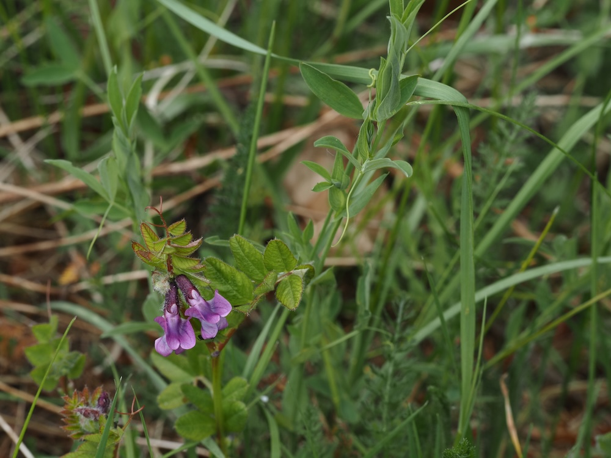
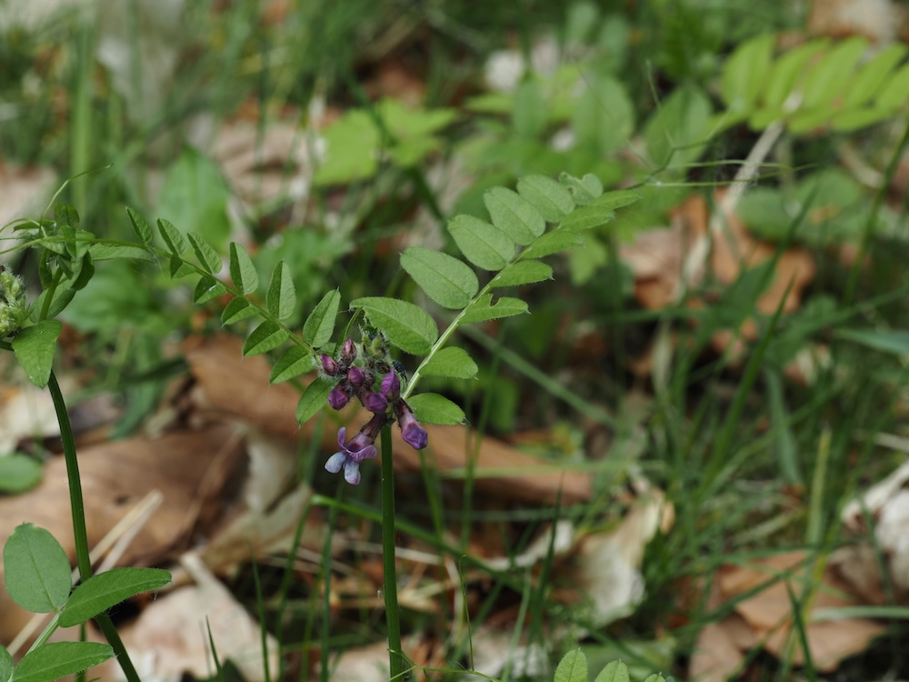
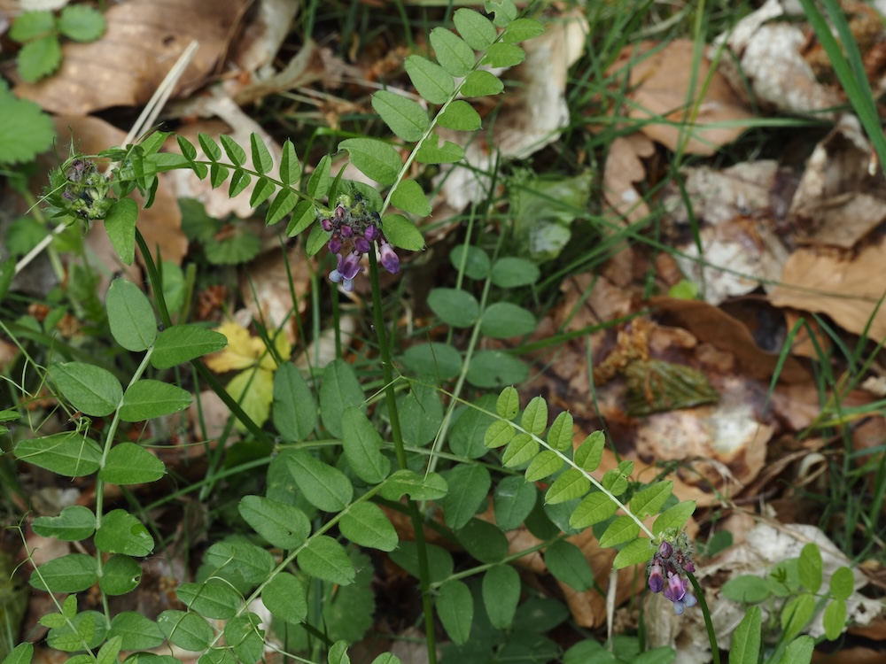

Frühe Schmetterlings-Tankstelle
Während viele Schmetterlingsblütler erst im Sommer blühen, ist die Zaun-Wicke schon im Mai aktiv — eine der ersten Hummelweiden des Frühsommers. Die rosa-violetten Blüten in lockeren Trauben sind perfekt auf Hummeln zugeschnitten: lange Blütenröhren, die nur lange Rüssel erreichen. Eine wichtige Brückenpflanze zwischen dem frühen Frühling (mit Lerchensporn, Veilchen) und dem Hochsommer.
Stickstoff-Fabrik in der Hecke
Wie alle Schmetterlingsblütler hat die Zaun-Wicke Knöllchenbakterien an den Wurzeln, die Luftstickstoff binden. Daher ist sie eine wichtige Pionierpflanze in Wiesen-Hecken-Säumen — sie düngt den Boden für andere Pflanzen. Mit ihren Ranken klettert sie aktiv an Zäunen, Hecken und benachbarten Pflanzen — daher der Name „Zaun-Wicke“.